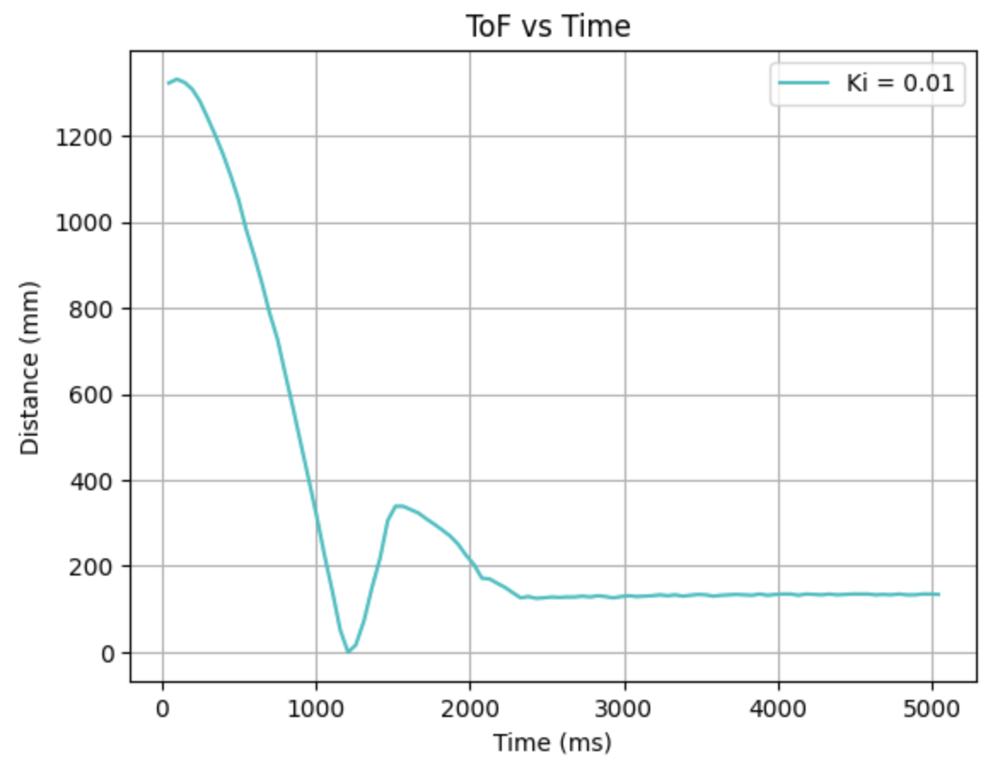

Lab 5: Linear PID and Linear Interpolation
PRE-LAB
BLUETOOTH: In the Pre-lab, I developed a method to send and receive PID data via Bluetooth, allowing for data collection and debugging. To implement this, I created a flag in Arduino that I constantly check its state in my main loop to act accordingly and several new commands:
- START_PID: Clears all previously stored data, starts ToF sensor ranging and clock and sets the
PID_liveflag totrue(initialized asfalseat the start of the sketch). - STOP_PID: Resets the
PID_liveflag tofalseand stops the motors. - SET_PID_GAINS: Receives input values from Python and updates the PID gain constants globally in Arduino.
- SEND_PID: Transmits the collected PID data to the computer via Bluetooth.
case START_PID:{
success = robot_cmd.get_next_value(goalDist);
if (!success) return;
limit_dist = goalDist;
int pid_idx = 0;
sumError = 0;
last_error = 0;
last_time = millis();
t1 = millis();
t2 = 0;
d1 = 0;
d2 = 0;
PID_live = true;
break;}
case STOP_PID:{
PID_live = false;
stop_motors();
break;}
case SET_PID_GAINS:{
float nKp, nKi, nKd;
success = robot_cmd.get_next_value(nKp);
if (!success)
return;
success = robot_cmd.get_next_value(nKi);
if (!success)
return;
success = robot_cmd.get_next_value(nKd);
if (!success)
return;
K_p = nKp;
K_i = nKi;
K_d = nKd;
break;}
case SEND_PID:
{
for (int i = 0; i < ArraySize; i++) {
tx_estring_value.clear();
tx_estring_value.append(time_pid[i]);
tx_estring_value.append(",");
tx_estring_value.append(distance_array1[i]);
tx_estring_value.append(",");
tx_estring_value.append(motor_speedArray[i]);
tx_characteristic_string.writeValue(tx_estring_value.c_str());
}
break;}
On the Python side, my notification handler remained largely the same as in Lab 3, with only the variable names modified. Which you can see below as well as how I called my commands:


TASKS
P-CONTROL:
For the P controller, I wrote code in the loop function that continuously checks the state of the PID_live flag. When PID_live is true, the robot starts collecting data and adjusts its movement based on its distance from the goal. It either moves forward or reverses accordingly. The speed for this adjustment is calculated by a separate function I created, pos_control, which returns the PWM value for the proportional control term.
void loop(){
...if bluetooth connected...
if (PID_live){
float distance1;
float motor_speed;
while (!TOFSensor1.checkForDataReady()){}
distance1 = TOFSensor1.getDistance(); //distance in mm
TOFSensor1.clearInterrupt();
TOFSensor1.stopRanging();
TOFSensor1.startRanging();
//P-control
motor_speed = pos_control(distance1, limit_dist);
if(pid_idx < ArraySize){
distance_array1[pid_idx] = distance1;
motor_speedArray[pid_idx] = motor_speed;
time_pid[pid_idx] = (float) millis() - time_pid_start;
}
pid_idx++;
if (motor_speed > 0){ //drive forward
straightLine(0, motor_speed); }
else if (motor_speed < 0){ //drive backward
straightLine(1, abs(motor_speed)); }
else {
stop_motors(); }
}
}
float pos_control(float actual_dist, float goal_dist) {
float error = actual_dist - goal_dist;
//P-control------------
float p_control = K_p * error;
if (p_control > 0) {
if (p_control > max_speed) p_control = max_speed;
return p_control; }
else if (p_control < 0) {
if (p_control < -max_speed) p_control = -max_speed;
return p_control; }
return p_control; }
I conducted several tests with different gain values, starting at 0.1 and then adjusting to 0.05. With Kp = 0.1, the robot would crash into the wall before reversing, while with Kp = 0.05, it stopped too early, leaving a significant gap from the target. After further testing, I found that a gain of 0.08 yielded the best results, with the robot stopping at approximately 350 mm—about 50 mm short of the goal distance.
 |
 |
PI-CONTROL:
For my PI-control I ran into many issues. In many cases the car would just ran straight to the wall, back up and go again and then it would reach steady state at around the right value. When I ran that code with a Ki value of 0.01. I got these values:
 |
 |
I did perfect my code, but by that time my battery had died so I could only run it while connected to the computer and just see the output by the print statements in the serial monitor. I ran this code with a Ki value of 0.01 and started the robot at around 15 inches ~ 370 mm and then went oscillating from there to 304mm. When I was about to reach the goal distance, the error blew up (not seen in the video, I stopped recording too early).
Given these tests, I decided to go with a smaller Ki value, around 0.0001. Just because 0.01 proved itself wrong multiple times so I think decreasing as much as possible would be the best for a Ki value.
PID-CONTROL:
My battery died at this point, but I was able to do my code and debug it while having the robot connected to my computer and just printing out statements and data in the serial monitor. I ran this code with the values of Kp=0.08, Ki=0.0001 and Kd = 0.5. Started the robot at around 15 inches ~ 370 mm and then went oscillating from there to 304mm.
LINEAR INTERPOLATION:
For the linear interpolation I just calculated the distance in my loop function with the previous two data points. I did change my full loop function so I'm going to include the full function with that part emphasized in the comments:
void loop(){
...if bluetooth connected...
TOFSensor1.startRanging();
if (PID_live){
float distance1;
float pid_error;
float sumStop;
time_pid[pid_idx] = (float)millis();
if (TOFSensor1.checkForDataReady()) {
distance1 = TOFSensor1.getDistance(); //distance in mm
sumStop = 0.5*distance_array1[0];
t2 = t1;
t1 = (float)millis();
d2 = d1;
d1 = distance1;
data =+ 1;
}
else if (!TOFSensor1.checkForDataReady() ) {
//LINEAR INTERPOLATION
float slope = (d2-d1)/(t2-t1);
distance1 = (((float)millis()-t1)*slope) + d1;
}
distance_array1[pid_idx] = distance1;
float dt = millis() - last_time;
errorss[pid_idx] = distance1 - limit_dist;
motor_speed = pos_control(errorss[pid_idx], sumStop, dt); //in units of pwm
if (pid_idx < ArraySize) { //meaning data was collected/calculated
distance_array1[pid_idx] = distance1;
motor_speedArray[pid_idx] = motor_speed;
}
pid_idx++;
last_time = millis();
if (motor_speed > 0) straightLine(0, motor_speed); //forward
else if (motor_speed < 0) straightLine(1, abs(motor_speed)); //back
else {
stop_motors();
sumError = 0;
}
}
}
5000 - WIND UP:
I implemented the wind up for my integrator in my pos_control function. When the wind up was not implemented the sum of the error kept incrementing and at first I was running the code without it and the robot would run straight to the wall, crash, do a flip and then I would stop it. At lab when I ran it again, it went straight to the wall at full speed, backed up at full speed, did a flip and then the battery came off. I then talked with my TA and I refined my wind up which now is like this:
float pos_control(float pid_error, float stop, float timelapsed) {
float i_control;
if (pid_error > stop) {
sumError = sumError + (pid_error * timelapsed);
sumError = constrain(sumError, -1000, 1000);
i_control = K_i * sumError;
if (i_control > 100) i_control = 100;
else if (i_control < -100) i_control = -100;
}
else i_control = 0;
p_control = K_p * pid_error;
float dError = (pid_error - last_error) / timelapsed;
float d_control = K_d * dError;
float speed = p_control + i_control + d_control;
last_error = pid_error; //reset
last_time = millis(); //reset
return speed;}
References:
For this Lab I referenced the past lab reports of Nila Narayan, Mikayla Lahr and Stephan Wagner.
Back to Lab 5 on main page
Lab 6: Orientation PID
PRE-LAB
IMPROVING LAB 5: To start this lab, I ran my Lab 5 code multiple times and perfected it. During this debugging process, because I had changed my code from what I had initially, my calibration factor for the wheels ended up decreasing from 1.8 to 1.6. And when I ran my PID, the final control values that work best were: Kp = 0.08, Ki = 0.00001, Kd = 0.8. My final Lab 5 code is:
BLUEETOOTH: ...
...
Back to Lab 6 on main pageLab 7: Kalman Filtering
Details about Lab 7...
Back to Lab 7 on main pageLab 8: Stunts!
Details about Lab 8...
Back to Lab 8 on main pageLab 9: Mapping
Details about Lab 9...
Back to Lab 9 on main pageLab 10: Localization (sim)
Details about Lab 10...
Back to Lab 10 on main pageLab 11: Localization (real)
Details about Lab 11...
Back to Lab 11 on main pageLab 12: Planning and Execution
Details about Lab 12...
Back to Lab 12 on main page